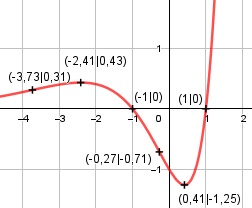

Aufgabe 148 f(x) = (x2 - 1) * ex Produktregel erste Ableitung: u = x2 - 1, u' = 2x v = ex, v' = ex f'(x) = 2x * ex + ex * (x2 - 1) f'(x) = ex * (2x + x2 - 1) = ex * (x2 + 2x - 1) Produktregel zweite Ableitung: u = ex , u' = ex v = x2 + 2x - 1, v' = 2x + 2 f''(x) = ex * (x2 + 2x - 1) + (2x + 2) * ex f''(x) = ex * (x2 + 2x - 1 + 2x + 2) f''(x) = ex * (x2 + 4x + 1) Produktregel dritte Ableitung: u = ex , u' = ex v = x2 + 4x + 1, v' = 2x + 4 f'''(x) = ex * (x2 + 4x + 1) + (2x + 4) * ex f'''(x) = ex * (x2 + 4x + 1 + 2x + 4) f'''(x) = ex * (x2 + 6x + 5) Definitionsbereich: -∞ < x < ∞ Waagerechte Asymptote: f(x) = (x2 - 1) * ex = geht gegen 0 für x --> -∞ Wertebereich: f(x) wird dann am kleinsten, wenn x = 0,41 (Extrempunkt) f(0,41) = - 1,25 --> -1,25 ≤ f(x) < ∞ Symmetrie zur y-Achse bzw. zum Punkt (0|0): x2 - 1 f(-x) = ((-x)2 - 1) * e(-x) = ------- ≠ f(x) ex --> keine Achsensymmetrie x2 - 1 -f(-x) = - ------- ≠ f(x) ex --> keine Punktsymmetrie Nullstellen: f(x) = 0 (x2 - 1) * ex = 0 |:ex x2 - 1 = 0 |+1 x2 = 1 |ⱱ x1,2 = ±1 N1(1|0), N2(-1|0) Schnittpunkt mit der y-Achse: x = 0 f(0) = (02 - 1) * e0 = -1 Sy(0|-1) Extrempunkte: f'(x) = 0 ex * (x2 + 2x - 1) = 0 |:ex x2 + 2x - 1 = 0 p, q – Formel p = 2, q = -1 x1,2 = x1,2 = -1 ± x1,2 = -1 ± x1,2 = -1 ± 1,41 x1 = -2,41 x2 = 0,41 x1 = -2,41 f(-2,41) = ((-2,41)2 - 1) * e-2,41 = 0,43 x2 = 0,41 f(0,41) = (0,412 - 1) * e0,41 = -1,25 f''(-2,41) = e-2,41 * ((-2,41)2 + 4 * (-2,41) + 1) < 0 --> Hochpunkt (-2,41|0,43) f''(0,41) = e0,41 * (0,412 + 4 * 0,41 + 1) > 0 --> Tiefpunkt (0,41|-1,25) Wendepunkte: f''(0) = 0 ex * (x2 + 4x + 1) = 0 |:ex x2 + 4x + 1 = 0 p, q – Formel p = 4, q = 1 x1,2 = x1,2 = -2 ± x1,2 = -2 ± x1,2 = -2 ± 1,73 x1 = -3,73 x2 = -0,27 x1 = -3,73 f(-3,73) = ((-3,73)2 - 1) * e-3,73 = 0,31 f'''(-3,73) = e-3,73*((-3,73)2 +6*(-3,73)+5) ≠ 0 --> WP1(-3,73|0,31) x2 = -0,27 f(-0,27) = ((-0,27)2 - 1) * e-0,27 = -0,71 f'''(-0,27) = e-0,27*((-0,27)2 +6*(-0,27)+5) ≠ 0 --> WP2(-0,27|-0,17) Graph:
